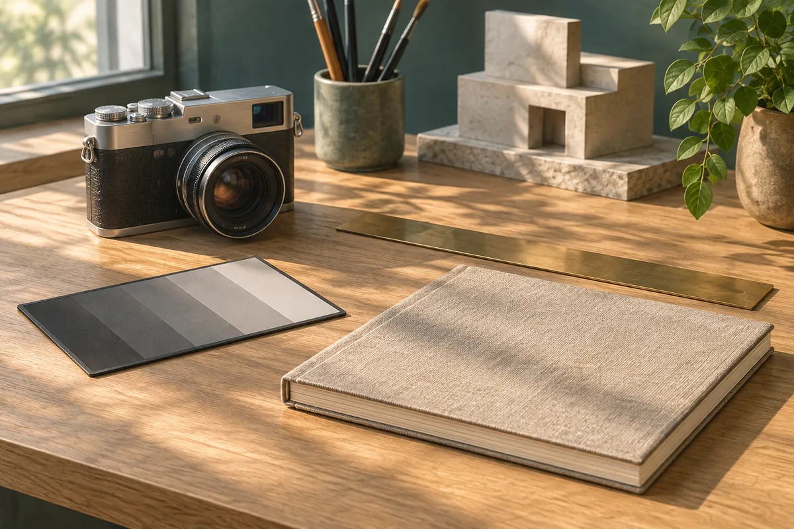

Publication Profile · 23 Reference Guides
About EMFLS Studio Journal

EMFLS Studio Journal is an independent technical publication dedicated to practical photography lighting geometry, accessible digital typography and color systems, and small-room studio ergonomics and acoustics.
Why We Focus on Physical & Visual Fundamentals
Independent photographers, designers, educators, and solo studio creators work in real rooms—often spare bedrooms, shared offices, or compact desks under three by four metres—rather than commercial soundstages with unlimited rigging space. Many frustrating creative issues stem from a handful of measurable physical factors: window light falling off too steeply across a portrait, clipped skin highlights under mixed Kelvin fixtures, muddy print proofs exported from wide-gamut displays, resonant bass reflections in untreated corners, or web diagrams whose color contrast fails WCAG legibility thresholds.
Instead of repeating vague gear opinions or affiliate product roundups, every EMFLS Studio Journal article breaks a recurring studio problem down to repeatable numbers, plain floor geometry, and step-by-step verification checks. Our guides explain how to meter incident light loss in photographic stops, compute WCAG relative luminance contrast ratios, compare sRGB and Display P3 color boundaries, position first-reflection broadband acoustic panels using a hand mirror, and establish durable plain-text project archives.
How Each Field Guide Is Structured & Verified
Before a guide enters our main archive, the EMFLS Editorial Desk follows a consistent four-part format designed so any reader can reproduce and audit the result with ordinary tools:
- Defined room or digital baseline: Every article states the working assumptions—room dimensions, modifier size, color space, viewing distance, or microphone capsule pattern—up front so numbers are never presented out of context.
- Scaled schematic & visual reference: Each guide pairs an editorial studio visual with an accessible inline SVG technical schematic (expandable to full 720-pixel width with keyboard scrolling) so spatial relationships are immediately clear on both phones and desktop monitors.
- Worked numerical table: Real ratios—such as stop falloff by distance, Kelvin shift steps, typographic modular scales, or microphone proximity bass boost—are laid out in scannable reference tables.
- Reproducible field checklist: Every article closes with concrete inspection steps so you can test the method on your own camera, display, or room acoustics rather than taking any number on faith.
Core Editorial Sections
- Lighting & Optics: Directional window diffusion, softbox inverse-square falloff, tabletop product shadow control, Kelvin color reconciliation, focal-length perspective compression, histogram reading, and RAW highlight headroom.
- Design & Color: Modular typographic scales, WCAG luminance contrast palettes, clear SVG diagramming rules, print versus screen color spaces, responsive editorial CSS grids, and deliberate whitespace hierarchy.
- Studio Workflow: Small-room first-reflection acoustic treatment, microphone distance and proximity control, monitor bias-lighting calibration, ergonomic desk geometry, non-destructive media file naming, and plain-text archiving.
Editorial Team, Cadence & Accountability
EMFLS Studio Journal is independently published and maintained by the EMFLS Editorial Desk as an ad-supported educational publication. We publish new original field guides on an ongoing schedule and periodically revise existing articles when technical standards (such as WCAG specifications, color profile workflows, or display calibration practices) evolve. All substantial technical revisions update the visible publication record and sitemap modification date.
Have a calculation correction, accessibility issue, or topic suggestion? Reach our editors directly via email at emfls24777@daum.net or review our full channels on the Contact page and Editorial Policy.